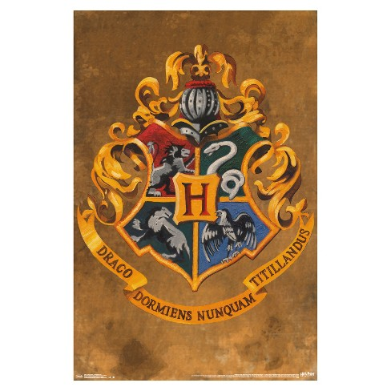

Hogwarts School of Witchcraft and Wizardry is the British wizarding school, located in the Scottish Highlands. It takes students from the United Kingdom of Great Britain and Northern Ireland, and also the Republic of Ireland.
The castle is located in the mountains near a loch. The precise location of the school can never be uncovered because it was rendered Unplottable. To Muggles, the school looks like an old abandoned castle. Similarly, most wizarding schools locations are protected in order to prevent their ways of teaching being revealed, as well as protect the students and schools themselves from any harm. Established around the 10th century, Hogwarts is considered to be one of the finest magical institutions in the Wizarding World, though other notable schools included Beauxbatons Academy of Magic in France, the Durmstrang Institute in Scandinavia, and Ilvermorny School of Witchcraft and Wizardry in the United States. Children with magical abilities are enrolled at birth, and acceptance is confirmed by owl post at age eleven. However, if the child in question is a Muggle-born, a professor from the school would come and inform the child's parents. The school's motto is Draco Dormiens Nunquam Titillandus (Draco Dormiens Nvnqvam Titillandvs), which, translated from Latin, means "Never tickle a sleeping dragon".